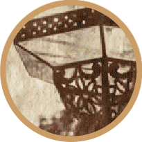

Línea del tiempo
Algunos procesos fotográficos del siglo XIX
Cristian Iraís Hernández Ortega
-
1840 - 1860,
Papel salado Impresión positiva cuyo soporte es un papel de fibra sensibilizado con sales de plata. -
1842 - Mediados del siglo XX,
Cianotipo Impresión fotográfica sobre un papel sensibilizado con sales de hierro. -

1850 - 1900,
Albúminas Impresión fotográfica positiva con una capa aglutinante de albúmina. -
1852 - 1870,
Ambrotipos La imagen es un positivo directo. La placa de la imagen es un vidrio. -

1855 - 1930,
Impresiones al carbón En esta impresión, la imagen se compone por partículas finas de carbón. -
1860 - 1940,
Aristotipos Se componen por un soporte de papel con recubrimiento de barita. -
1873 - 1930,
Platinotipos y paladiotipos Impresión en positivo sobre un papel sensibilizado con una mezcla de sales. -
1880 - actualidad,
Impresiones de plata sobre gelatina de revelado Requieren de una pequeña exposición de luz para generar una imagen latente.